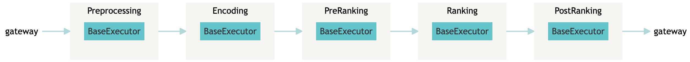
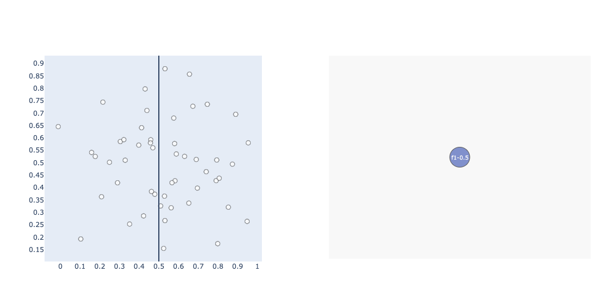
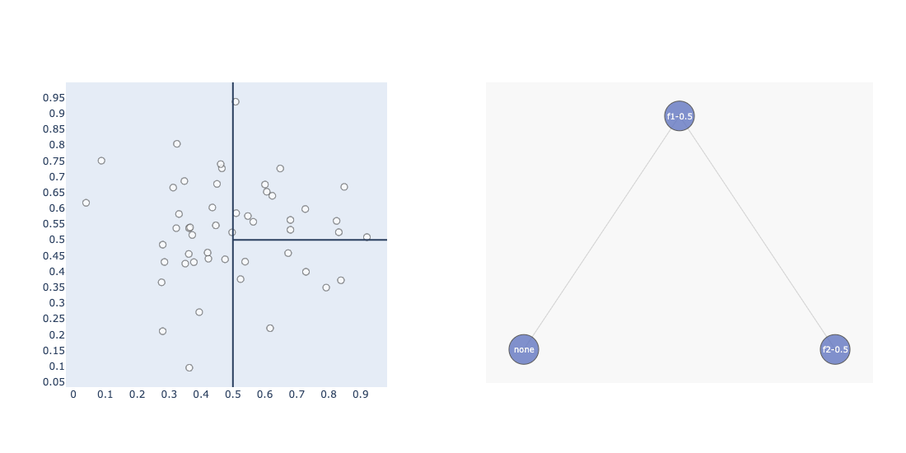
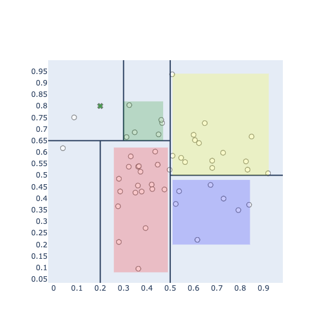
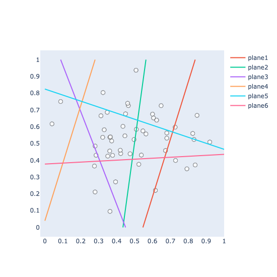
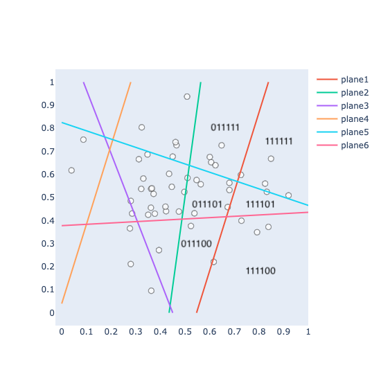

Nowadays, the Neural Search community leverages FAISS/HNSWLIB for approximate nearest neighbor search, and we refer to it as ANN. While building a Neural Search system, ANN search is essential to quickly find a set of articles given millions or articles being indexed in memory or disk. The objective of ANN is to maximize Recall. Typically, we call it Pre-Ranking:

For those building a Neural Search/Recommender system, the illustration above might look familiar to you. After preprocessing the articles and encoding all the articles into embeddings, we usually have three stages of Ranking:
- Pre-Ranking: Leverage ANN to find candidate documents from the collections and optimize for Recall (in the dense-retrieval community, refer to it as bi-encoder).
- Ranking: Given data such as pairs of documents and their similarity score as label produced by pre-ranking step, leverage siamese nets/two-tower nets to optimize rank hinge loss and produce a similarity score (in dense retrieval community refer it as cross-encoder).
- Post-Ranking: Other ranking measures are given by business requirements or other metrics. Such as, business owners like to put articles with a higher stock rate on top of the rank list or sacrifice the precision/recall to optimize for article diversity.
The Nearest Neighbour Search (NN) stays at the core of the pipeline: the quality of the final ranking list is highly dependent on the candidates being generated by the Pre-Ranking step. In this blog, I will cover some basic NN methods for Neural Search.
I'm going to start from KNN, then goes to KD-Trees and finalize with Locality Sensitive Hashing (LSH).
Motivation
Imaging we want to build a CBIR (content-based information retrieval) system for a fashion store, which allow user to upload an image of a fashion product to find similar products in stock.
How can we achieve that?
At indexing time (off-line), we need to index all vision features (could be dense vectors or bag of visual words) as feature vectors. At the searching time (online), when a user posts an image to the search system, we encode the query image into its feature vector and find similar products by computing similarity/distance scores between the query vector and all fashion products.
How can we achieve it fast?
When your fashion company has limited products, it is doable using brute force search (compute score one-by-one) and produce the final rank list. What if you have a million products or even more? We'll answer the question in the following sub-sections.
Problem Definition
Given a query document \(Q\) and indexed documents \(D_1, D_2, ..., D_N\), we want to find top-k documents which is sorted based on similarity mearesure:
where \(D^{knn}\) denotes for top-k nearest neightbours, and \(D_i\) denotes for any documents inside the document collection.
KNN
K-nearest neighbor is easy. We:
- first take out \(K\) elements \((D_1, ..., D_k)\) from collection \(D\).
- Compute similarity between \(Q\) and \(K\) elements, and sort them in a DESC order.
- Loop through \(D_{k+1}, ..., D_{N}\), compute the similarity between \(Q\) and each \(D_{i}\), if the similarity score is greater than the ith elements in K documents, we'll pop the last item in the sorted queue, bubble down the rest items and insert the \(D_i\) into the ith index.
But what is the complexity of brute force search? Given an optimized KNN implementation, we can achieve O(NlogK). This could be extremely expensive when the user has an extensive collection of articles to be searched through! This is especially the case when users expect to get a ranked list as soon as possible!
KD-Trees
KD-Trees follow an iterative process to construct the tree. To make the visualization more straightforward, we suppose the data only consist of two features: f1 (x-axis), f2 (y-axis), and 50 items. Which looks like this:

Construction of a KD-Tree (Indexing)
iteration 1
Construction of a KD-Tree starts with selecting a practical feature and setting a threshold for this feature. To illustrate the idea, we begin with a manual selection of f1 and a feature threshold of 0.5. To this end, we get a boundary like this:

As you can see from the figure above, the feature space has been split into two parts by our first selection of f1 with a threshold 0.5. How is it reflected for thee tree?
When building the index, we're essentially creating a binary search tree. The first selection of f1 with threshold 0.5 became our root node. Given each data point, if the f1 is greater than .5, it will be placed to the right of the node. Otherwise, we put it to the left of the node.
iteration 2
We continue from the tree above. In the second iteration, let's define our rule as: given f1 > 0.5, select f2 with threshold 0.5.

As was shown in the graph above, now we split the feature space again based on the new rule, and it is also reflected on our tree: we created a new Node f2-0.5 into the figure (the none Node is only for visualization purpose, we haven't created this Node).
iteration N
If we follow this process, we will end up with:

As was shown in the above figure, the entire feature space has been split into six bins. Compared with before, we added three new Nodes, including two leaf Nodes:
- the previous 'none' was replaced by an actual node
f2-0.65; this Node split the space of f2 based on threshold 0.65, and it only happens when f1<0.5. - when f2<0.65, we further split f1 by a threshold of 0.2.
- when f2>0.65, we further split f1 by a threshold of 0.3.
To this end, our tree has three leaf nodes, and each leaf node can construct two bins (less/larger than the threshold), and we have six bins in total. And each data point can be placed into one of the bins.
Then we finish the construction of the KD-Tree. It should be noted that constructing a KD-Tree could be non-trivial since you need to consider some hyper-parameters, such as how to set the threshold or how many bins we should create (or the stop criteria). In practice, there are no golden rules. Normally mean or median can be used to set the threshold. The number of bins, could be highly dependent on the evaluation of the results and fine-tuning.
Nearest Neighbour: KD-Tree Searching
At searching time when a user uploads an image is illustrated as the green x in the image below:

We can easily place the search article into the top-left bin. Within that bin, we have 1 item that can be considered the candidate's nearest neighbor. At the same time, it's not finished yet.
Given this query data, we also need to compute the minimal distance between the query image and all-other-bins. More specifically, not the bins themselves, but the bounding box (represented as rectangles inside each bins).
If the minimal distance between the query vector is:
- greater than the distance against the candidate in the same bin, we ignore this bin by pruning the leaf node.
- less than the distance against the candidate in the same bin, we add this bin (and all items inside the bin) as candidates.
To this end, our search space can be greatly reduced: we do not need to conduct brute-force search, search through several bins is sufficiently enough. In the above case, it is 2.
Approximate Nearest Neighbour: KD-Tree Searching
ANN Search for KD-Tree is straightforward. The idea is similar to what we're doing for hard-negative mining: adding a margin to the distance.
In the KD-Tree NN search case, given the query and candidate item in the same bin, let's say the distance between them is \(d(q, candidate)\). After then, we also compute the minimal distance between the query and the bounding boxes. In the above example, we'll get five other distances. If the distance between the query and the bounding box is less than \(d(q, candidate)\), we include all the items inside the bin.
ANN search works exactly the same, while we penalize the \(d(q, candidate)\) a little bit by divide \(d(q, candidate)/factor\) where \(factor \in [1, \infty)\).
In this case, if factor=1, it is identical to the NN search. If factor>1, the distance between query and bounding boxes has to be even smaller than the penalized value to be considered as nearest neighbors.
In practice, KD-Trees suffer from the curse of dimensionality. It is tricky to apply them to high-dimensional data. Some variations have been adapted to solve the issue. For example, Annoy implements a Randomized KD-Tree forest:
Using random projections and by building up a tree. At every intermediate node in the tree, a random hyperplane is chosen, which divides the space into two subspaces. This hyperplane is chosen by sampling two points from the subset and taking the hyperplane equidistant from them. We do this k times so that we get a forest of trees. k has to be tuned to your need, by looking at what tradeoff you have between precision and performance.
Locality Sensitive Hashing
Locality Sensitive Hashing can be an excellent alternative for NN search. It is still one of the most widely used ANN search algorithms, given a million-scale data point to be indexed. Similar to before, we'll start from index construction.
We will use the same dataset as used above: 2 features f1 and f2, with 50 data points in the 2-dimensional space:
Construction of LSH Bins (Indexing)
At indexing time, we first need to create random planes (hyperplanes) to split the feature space into bins.

In the figure above, we have created six hyperplanes. Each hyper-plane can split our feature space into two bins: either left/right or up/bottom, which can be represented as binary codes (or signs): 0 or 1. This binary code forms the index of a bin.
Let's try to get the bin index of the bottom right bin (which has 4 points in the bin); it is located on the:
- right of the plane1, the sign at position 0 is 1.
- right of the plane2, sign at position 1 is 1.
- right of the plane3, sign at position 2 is 1.
- right of the plane4, sign at position 3 is 1.
- bottom of the plane5, sign at position 4 is 0.
- bottom of the plane6, sign at position 5 is 0.
So that we can represent the bottom-right bin as 111100, if we iterative this process and annotate each bins with a bin index, we'll end up with a hash map: The keys of the hash map is the bin index, while the values of the hash map are the ids of the data points within the bin.
Now we finished the process of index construction of LSH.

Nearest Neighbour: Searching through Bins
Searching using LSH is easy. Intuitively, given a query, you can search all data points within its own bin or search through its neighboring bins.
How to search through its neighboring bins? Take a look at the figure above. The bin index is represented as binary codes. The neighboring bins will only have 1 bit of mismatch against its own bin index.
Apparently, you can consider this as a hyper-parameter to search through more neighboring bins.
I'll conclude the blog here. The next time, we'll move into a billion-scale ANN search beyond KD-Trees and Locality Sensitive hashing, i.e., Graph Traversal based algorithms and Product Quantization.